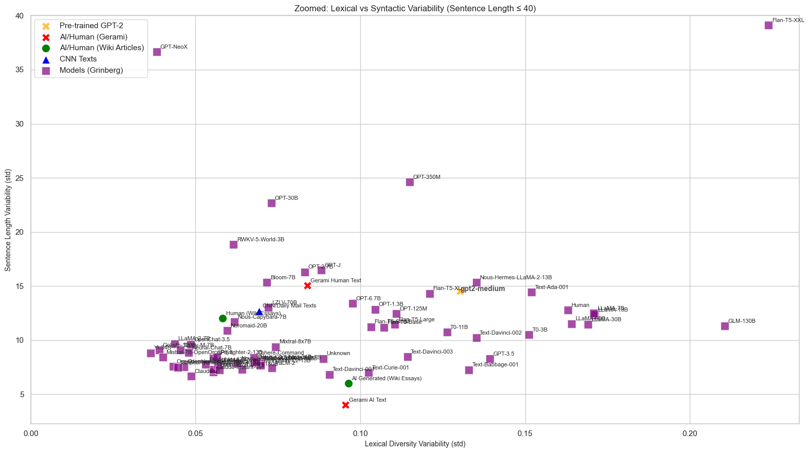

Last time I generated 20,000 GPT-2 text sequences and compared them to other AI and human-written corpora, making this image:

Image from previous analysis, Lexical Diversity Variability against Sentence Length Variability (aka the standard deviations), then placing our own dataset amongst other known AI and Human datasets.
Next, we're going to try and recreate an "AI-checker" you may find online by comparing AI vs human text using token-level divergence measures, which we'll get more into later...
But first I need to dispell a "myth" that seems to exist: that you can't get into AI/ML/Deep Learning, whatever jargon you want to call it, if you are a junior developer.
I'm currently working on reading Deep Learning with Python available for free online by François Chollet (inventor of Keras) and Matthew Watson, and I should mention 3Blue1Brown videos on neural networks are another source of my inspiration for this project.
There seems to be a lesson, and I see why it's taken hold to be fair, after all I don't have a coding job, that ML jobs are for senior developers, and I don't see why this is the consensus.
After all, to quote François and Matthew, "Machine learning models are all about finding appropriate representations for their input data--transformations of the data that make it more amenable to the task at hand." And you really don't need any degree for that... and these old heads don't know heads from tails when it comes to AI text, images or sound, we 'young bucks' on the other hand know it in a blink of an eye... so why should they be making the tools we use?
You may be thinking "he's not a language researcher," and you're right I am not exactly a language researcher, but I have done similar language projects in the past like a rhyme data base, and being a language researcher really is just a matter of spending money on a degree and this should comes down to a matter of relatively simple statistics... and I achieved a very respectable 4 in AP Statistics ©.....
This is to say we're going to do it anyway and I don't care....
So what are token-level divergence measures?
Well instead of global stats (like lexical diversity or sentence length, or their respective standard deviations) these metrics check differences in individual word choices,
sequences, and phrasing.
So why are these the hammer of AI checkers? (I guess the nail is the checking idk)
It goes back to how AI's like ChatGPT work, and makes me go back to a time I regret... *fade to white,*
I have this one friend who's familiy is maybea couple of income brackets above mine, and one time
the dad was talking to me and said something like "they're really just predicting the next word," and I didn't say that
was stupid exactly but instead something stupid like "Errrrmmm... that's not exactly true they're doing a lot more than that with the thinking models..."
But at the end of the day, as I should've gone to class more, cause he was 100% right they are just predicting the next word and I got "schooled" so yes, I should've respected his unc title more...
Basically, token-level divergence measures aren't one thing they are a bunch of measures people made up to try and find patterns, or in other words they try to order chaos.
... tomorrow I start with step 1 for now I sleep.
Here are the main measures I'll be gathering:
Where global measures failed, token-level divergence may reveal the subtle stylistic differences that make AI and human text distinct.